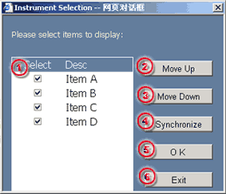

To select instrument for trading
The Instrument Button in the Menu activates the Instrument Selection dialog. In the dialog, user may perform the following operation:
| 1 | Select - check to select instrument for trading |  |
| 2 | Move Up - to move the selected instrument a row up on every click | |
| 3 | Move Down - to move the selected instrument a row down on every click | |
| 4 | Synchronize - to synchronize the system for all instruments that available for trading | |
| 5 | Ok - to confirm the changes | |
| 6 | Exit - close the dialog and return to the main screen |